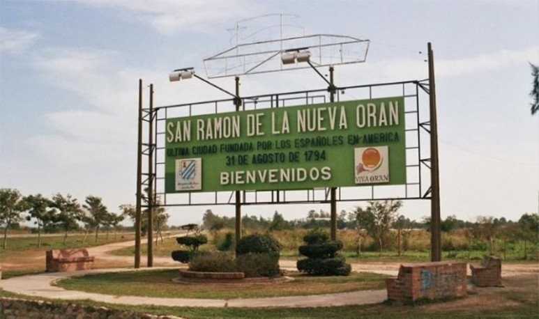

San Ramon de la Nueva Oran

San Ramón de la Nueva Orán, más conocida como Orán, es una ciudad del norte de Argentina, en la provincia de Salta. Es cabecera del departamento Orán, en el norte de la provincia. En el censo de 2010 registró una población de 82 413 habitantes, de los cuales 76 070 habitan la zona urbana.1 Este hace que la convierta en el 2º mayor centro urbano de la provincia y uno de los 40 mayores centros urbanos del país
Clima
El clima es tropical con estación seca. El clima de Orán es del tipo clima subtropical húmedo con invierno seco (verano cálido), Köppen: Cwa, de acuerdo con la clasificación climática de Köppen. En verano las altas temperaturas y humedad constantes tornan el clima muy desconfortable; durante el invierno se produce la estación seca con escasas precipitaciones y temperaturas frescas a confortables. Las precipitaciones rondan cerca de los 1000 mm anuales. En cuanto a las temperaturas, las máximas promedian los 32.4 °C en el mes de enero (verano) y las mínimas llegan a 8.9 °C en julio, durante el invierno.
Clima de Hoy